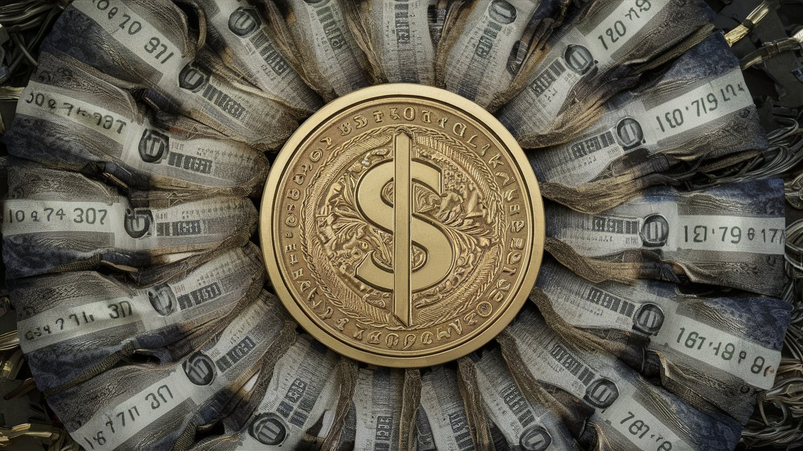

Dolar/TL Kuru Rekor Seviyeye Yükseldi:

Dolar/TL kuru, son beş yılın en yüksek seviyesine ulaştı. Ekonomistler, kurdaki dalgalanmanın dış borç ödemeleri ve enflasyon üzerindeki olumsuz etkilerine dikkat çekiyor.
Türkiye ekonomisi, döviz kurlarında yaşanan sert dalgalanmalar nedeniyle zor günler geçiriyor. Dolar, Türk Lirası karşısında tarihi zirveye ulaşarak 30 TL seviyesini aştı. Bu durum, özellikle ithalata dayalı sektörlerde faaliyet gösteren işletmeler için büyük bir maliyet baskısı oluşturdu. Gıda, enerji ve teknoloji ürünlerinde fiyat artışları kaçınılmaz hale geldi.
Ekonomistler, bu durumun nedenleri arasında Türkiye'nin yüksek dış borç yükünü, cari açığı ve küresel ekonomik belirsizlikleri gösteriyor. Merkez Bankası, döviz kurlarındaki dalgalanmayı dizginlemek için faiz oranlarını artırmayı değerlendiriyor. Ancak bu hamlenin, enflasyon üzerindeki etkisi konusunda farklı görüşler mevcut. Bazı uzmanlar, faiz artırımının enflasyonu kontrol altına almak için gerekli olduğunu savunurken, diğerleri bunun ekonomik büyümeyi yavaşlatacağını ve işsizlik oranını artıracağını öne sürüyor.

Bu dalgalanma, halkın günlük yaşamını da derinden etkiliyor. Özellikle dövizle borçlanan şirketler ve bireyler, ödeme güçlükleriyle karşı karşıya kalıyor. Marketlerde ve mağazalarda fiyatların hızla yükselmesi, vatandaşların alım gücünü düşürüyor. Pek çok kişi, günlük harcamalarını kısarak tasarruf yapmaya çalışıyor. Öte yandan, gayrimenkul ve altın gibi güvenli liman olarak görülen yatırımlara olan talep artmış durumda.
Hükümet, bu süreçte ekonomik istikrarı sağlamak için çeşitli önlemler alacağını açıkladı. Bunlar arasında döviz rezervlerinin artırılması, dış ticaret açığının kapatılması ve yabancı yatırımcıları çekmeye yönelik teşviklerin artırılması yer alıyor. Ancak piyasalarda, döviz kurlarının ne zaman dengeleneceği ve ekonominin bu durumdan ne ölçüde etkileneceği konusundaki belirsizlik devam ediyor.